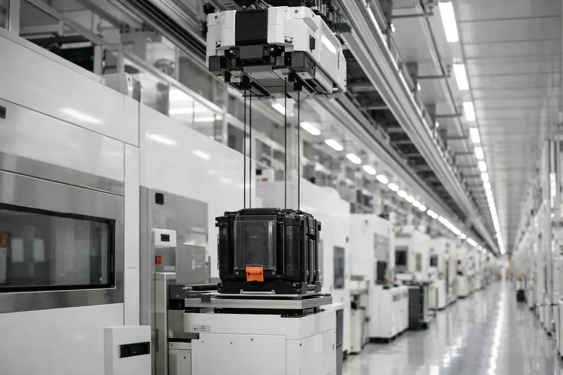

Load Port
FOUP 장착과 Slot Mapping
이 강의가 끝나면
6강과 이어지는 곳
6강의 Door Sensor 와 광 센서가 여기서 쓰입니다. 문이 열렸다는 신호가 있어야 로봇이 들어가고, 매핑 센서는 빛이 웨이퍼에 가려지는지로 칸마다 유무를 판정합니다.
Load Port — 장비의 현관

FOUP은 그냥 상자가 아니다

FOUP을 여는 일이 왜 정교한가
오염을 막으며 연다
문을 여는 순간에도 바깥 공기가 웨이퍼에 닿으면 안 됩니다. 그래서 순서가 엄격합니다. FOUP 안은 장비의 EFEM 과 곧바로 이어지는데, EFEM 은 천장 필터(FFU)로 깨끗한 공기를 위에서 아래로 불어 넣고 바깥보다 압력을 조금 높게 유지합니다.
목록을 먼저 만든다
꺼내기 전에 어느 칸에 무엇이 있는지 알아야 헛손질과 사고를 막습니다. 로봇에게는 눈이 없습니다 — 매핑 목록이 그 눈입니다.
반드시 세 단계로만 열립니다
Docking — 항상 같은 자리에 놓기
Door Open — 두 문을 함께
동시 개방
FOUP 문과 장비 문이 맞물려 함께 열려, 그 사이로 외기가 들어갈 틈이 없습니다.
문이 열렸다는 신호가 있어야
센서 탭의 Door Sensor 가 OPEN 이어야 FOUP 쪽 Extend 가 허가됩니다. 아니면 ALM-301 Door Interlock. 반대로 팔이 FOUP 안에 있으면 문을 닫을 수도, FOUP 을 내릴 수도 없습니다 — ALM-306.
Load Port 가 거부하는 동작
| 코드 | 언제 | 왜 막나 |
|---|---|---|
| ALM-305 | Docking 전에 Door Open | FOUP 문과 포트 문이 맞붙지 않았다 — 열면 외기가 들어간다 |
| ALM-307 | 문이 닫힌 채 Mapping | 센서가 FOUP 안을 볼 수 없다 |
| ALM-301 | 문이 닫힌 채 FOUP 으로 Extend | 팔이 닫힌 문에 부딪힌다 — Door Interlock |
| ALM-306 | 팔이 FOUP 안에 있는데 Door Close · Undock | 문이 팔을 친다 |
25칸을 하나씩 잡지는 않습니다 — 한 번 훑어 목록을 만든다
목록이 곧 계획입니다
있는 칸만, 정해진 순서로
"1·2·3번에 있음, 4·5번 비었음" — 이 목록으로 Pick 순서를 정합니다. Z 를 어느 칸에 맞출지도 목록이 정합니다.
Place 할 빈 칸도 목록에서
공정을 마친 웨이퍼를 FOUP 에 되돌릴 때도, 이미 찬 칸에 놓으면 이중 적재 — ALM-505. 빈 칸도 목록이 알려 줍니다.
Mapping Error — 목록과 현실이 다를 때
| 유형 | 상태 | 위험 |
|---|---|---|
| Cross | 두 칸에 걸침 | Pick 시 충돌 · 파손 |
| Double | 한 칸 두 장 | 이중 파지 · 낙하 |
| Protrude | 덜 들어감 (앞으로 튀어나옴) | 위치 이탈 · 포트 도어나 팔과 충돌 |
매핑을 믿되, 확인하라
이중 확인
매핑 목록과 실제 슬롯 상태를 비교해 불일치를 잡습니다. 이런 상태는 Pick 전에 걸러야 합니다.
불일치 처리
어긋나면 재매핑하거나 해당 칸을 건너뜁니다. 원인을 모르면 그 FOUP 은 작업을 멈추고 보고합니다 — 틀린 목록으로 계속하면 사고가 납니다.
신호가 틀리는 원인
웨이퍼가 비스듬히 꽂혔거나(Cross), 센서 렌즈가 오염됐거나 광축이 틀어진 경우입니다(6강 고장 모드).
| SLOT | 매핑 신호 | 실제 웨이퍼 |
|---|---|---|
| 1 | 감지 | W1 |
| 2 | 감지 | W2 |
| 3 | 없음 | W3 |
| 4 | 없음 | 없음 |
| 5 | 없음 | 없음 |
왜 어느 FOUP이든 맞물릴까 — SEMI 표준
| 표준 | 정하는 것 | 이 강의에서 |
|---|---|---|
| SEMI E47.1 | 300 mm FOUP 의 치수 · 슬롯 25칸 · 문 위치 | FOUP |
| SEMI E57 | FOUP 바닥 홈과 스테이지 핀의 위치 (키네마틱 커플링) | Docking |
| SEMI E15.1 | Load Port 의 높이 · 개구부 · 도어 동작 | Door Open |
| SEMI E84 | 반송장치와 장비가 FOUP 을 주고받는 신호 약속 | 다음 장 |
| SEMI E99 | FOUP ID(RFID) 를 읽고 쓰는 방식 | FOUP |
반송장치와 장비의 약속 (E84)

| # | 누가 | 신호 · 뜻 |
|---|---|---|
| 1 | OHT | VALID · CS_0 "이 포트에 주려고 한다" |
| 2 | 장비 | L_REQ "받을 수 있다" (포트가 비었다) |
| 3 | OHT → 장비 | TR_REQ → READY "옮겨도 되나" → "준비됨" |
| 4 | OHT | BUSY 내리는 중 → COMPT 끝 |
왜 표준
회사가 달라도 이 약속이 같아 어떤 반송장치·장비끼리도 안전하게 인계됩니다.
Load Port에서 자주 나는 문제
| 증상 | 코드 | 원인 · 조치 |
|---|---|---|
| FOUP 으로 Extend 거부 | ALM-301 | Door 미개방 → Load Port 탭에서 Door Open |
| Door Open 거부 | ALM-305 | Docking 을 안 했다 |
| Mapping 거부 | ALM-307 | 문을 안 열었다 |
| Door Close · Undock 거부 | ALM-306 | 팔이 FOUP 안 → Retract 먼저 |
| Pick 거부 | ALM-502 | 빈 칸 겨냥 — 매핑 목록을 안 봤거나 Z 가 다른 칸 |
| 매핑 결과 이상 | — | 웨이퍼 삐뚤어짐(Cross) · 센서 오염 → 표에서 빨간 줄 확인(훈련 ③에서는 도면의 FOUP 과 대조) |
시뮬레이터 화면 지도 — 7강에서 쓰는 곳
| 어디 | 여기서 하는 일 |
|---|---|
| Load Port 탭 | Docking/Undock · Door Open/Close · Mapping, 그리고 매핑 신호 vs 실제 표 |
| 수동조작 탭 | Initialize · Home · Extend — ALM-301 재현용 |
| 센서 모니터 | Door Sensor OPEN/CLOSE · Slot Mapping "1 2 3 - -" |
| 도면의 FOUP | 눌러서 실물 설명 보기 — 미션 ③ |
| 훈련 탭 | 드릴 3개 — 지시만 뜨는 곳 |
표 읽는 법
SLOT · 매핑 신호 · 실제 웨이퍼 세 줄을 나란히 봅니다. 매핑 전에는 신호 칸이 "—", 매핑 뒤에는 "감지 / 없음". 빨간 줄이 신호와 실물이 다른 칸입니다. 단, 훈련 ③ 중에는 실제 열과 빨간 표시가 가려집니다 — 표의 신호와 도면 FOUP 에 그려진 웨이퍼를 직접 세어 비교해야 합니다. 현장에서도 표가 답을 알려 주지 않습니다.
7강에서 직접 해볼 것
드릴 3개 — 무엇을 보는 훈련인가
| 드릴 | 완료 조건 | 제한 | 무엇을 보는가 |
|---|---|---|---|
| ① 장착과 해제 순서 | Docking → Door Open → Mapping → Door Close → Undock 을 순서대로 | 조작 수 기록 | 열 때와 닫을 때의 순서 |
| ② 매핑 판독 | 감지된 슬롯 번호(예: 1,3,4)와 빈 칸 수를 적는다 | 오답 2회까지 | 표를 읽어 목록을 만드는 눈 |
| ③ 신호와 실물이 다를 때 | 신호가 틀린 슬롯 번호와 그 칸의 실제 상태(있음/없음) | 오답 2회까지 | 신호를 믿되 확인하는 습관 |
②③에서 막히는 곳 — "먼저 Mapping 을 실행하세요"
답을 적기 전에 Load Port 탭에서 Docking → Door Open → Mapping 을 해야 합니다. 드릴이 시작될 때 웨이퍼 배치가 새로 정해지니, 이전에 본 표를 기억해 적으면 틀립니다.
7강에서 남길 것
Q1
매핑을 Pick 보다 먼저 하는 이유는?
→ 빈 칸 Pick(ALM-502)과 이중 적재를 막고, 어느 칸을 어떤 순서로 집을지 계획하려고.
Q2
문을 닫으려는데 ALM-306 이 떴습니다. 무엇을 먼저?
→ 팔이 FOUP 안에 있다. Retract 뒤에 Door Close.
Q3
매핑 신호는 "감지"인데 실제로 비어 있는 칸에서 Pick 하면?
→ ALM-502 — Presence OFF 위치에서 Pick. 목록이 틀린 것.